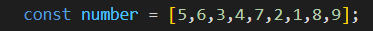
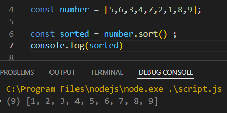
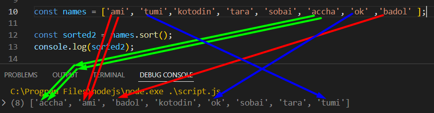
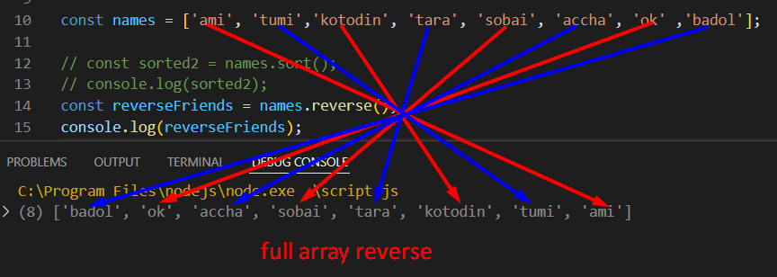
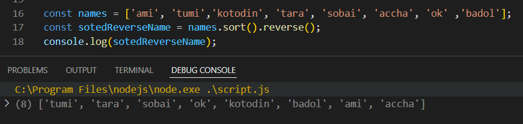
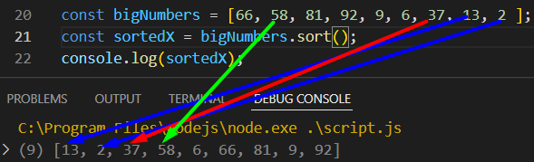

উপরের array এর মধ্যে থাকা নাম্বার গুলাকে ছোট থেকে বড় আনুশারে সাজাতে হলে , sort করতে হবে ।

একইভাবে কোন ওয়ার্ড কে-ও sort করা যায় , এ ক্ষেত্রে word এর প্রথম Character কে দেখে সেটাকে শুরু থকে শেষ এর দিকে সাজায় ,
আবার যদি একই Character এর আকাধিক word থাকে তবে একই প্রথম Character এর পরে দ্বিতীয় Character টাকে দেখে ,
তারপর যার দ্বিতীয় Character টা তুলনামুলক শুরুর দিকে আছে সেটাকেই আগে রাখে ।


এ ক্ষেত্রে প্রথমে , sort করবে তারপর reverse করবে ।

JS এ কোন নাম্বার কে sort করতে হলে সে ক্ষেত্রে একটা function দিতে হয় , এবং তার perameter দিতে হয় ( x, y) তারপর return করতে হয় ( x - y)
without function
